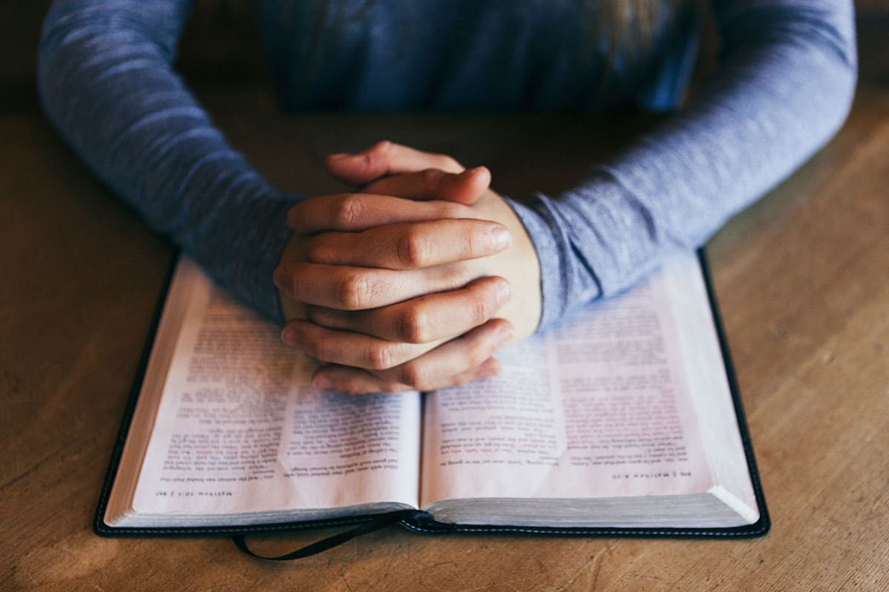

Área Espiritual
Crecimiento Espiritual
El desarrollo espiritual es fundamental para encontrar paz, propósito y conexión con Dios.

Mis Metas
Corto Plazo:
Orar, reflexionar diariamente, y enfocarme en ser un mejor hijo de Dios en todos los aspectos.
Mediano Plazo:
Leer de manera constante la Biblia, fortalecer mi fe, estar en una mayor conexión con Dios y dando testimonio de Él.
Largo Plazo:
Estar más cerca que nunca de Dios, sirviendole a Él juntamente con mi familia, haciendo su voluntad